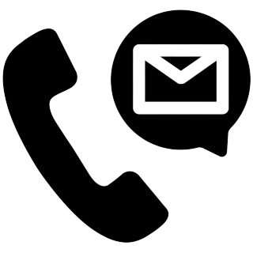
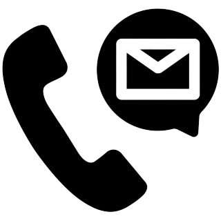

Life is all about the journey and what you experience along the way.
| I am employed at Tunas Manja Supermarket as a cashier from october 2021 until march 2022. Working as a cashier has taught me how to multitask. Until there's a big queue, it's usually easy to focus on a current order, direct another customer to aisle four and then make sure the bag boy doesn't squash the customer's food. Working as a cashier requires a lot of thought processes. Even though it could seem unimportant at times, you frequently need to be quick on your feet. | |
| I work in the school canteen while I wait for my diploma studies results. During breakfast and lunch, students and staff make the most use of the school canteen. The tasks involved in a school cafeteria may be different from those in commercial kitchens due to the latter's potential for a greater workload and more demands from patrons, which can result in tension and physical exhaustion. In school canteens, cooking and cleaning are typically done by hand without the use of modern kitchen appliances. As was previously indicated, working in a canteen can result in a lack of space for work and increased tension due to the constant use of the hands and upper arm muscles (triceps, biceps). |